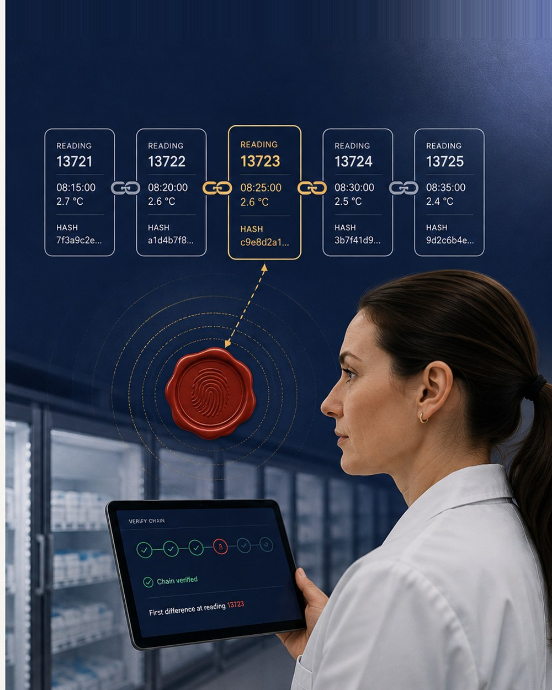

Cold storage
Map every freezer, cooler and zone. Threshold breaches alert the right team before product is at risk.

FahCel turns every logger reading into a tamper-evident record — so you can prove your cold chain held, from the dock to the shelf.
Trusted across the cold chain
Wireless loggers report temperature, humidity, shock and light at every leg — and FahCel chains each reading so the history can't be quietly rewritten.
Map every freezer, cooler and zone. Threshold breaches alert the right team before product is at risk.

Loggers ride with the pallet across handoffs, logging location, jolts and door-open events the whole way.

Hand stores and inspectors a verifiable record of the journey — no clipboards, no gaps, no disputes.

Quality leads, logistics ops and auditors work from one record — fewer spreadsheets, faster sign-off, defensible proof.
Export a signed PDF of any shipment's full temperature history, complete with the integrity check result.
Threshold and door-open alerts hit your phone the moment a reading drifts — not at the next manual check.
When a load is rejected, the chain shows exactly where and when cold was lost — and who was holding it.
Straight answers on how the chain works, what FahCel monitors, and how the record holds up in an audit.
See FahCel running on a live shipment — loggers, alerts and a verifiable hash chain — in a 20-minute walkthrough.